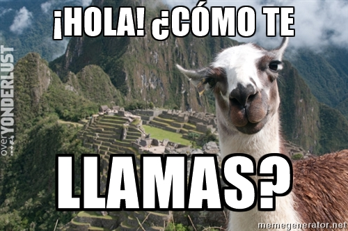

470 million native speakers
567 million speakers (native + second language)
Latin Language and the Roman empire
Latin Language had a classic version (literature)
and a spoken version (Vulgar Latin)
...or in latin Sermo vulgaris
Northwest Iberia
After the fall of the Roman Empire
Standard form in 1200
Center in Toledo
Where is Spanish language on the previous map???
Spain has how many official language???
How do I say 'Hi' in Spanish
In Iberia Spanish is referred as Castilian
Official languages: Spanish, Bask, Catalan and Gallego
You wake up in Mexico city, what do you say?
Buenos dias
Buenos --> Good(s)
Dias --> Days
Buenas Tardes
Buenas --> Good(s)
Tardes --> Aftermoon(s)
Buenas Noches
Buenas --> Good(s)
Noches --> Nights(s)
How --> ¿Cómo?
Where --> ¿Dónde?
When --> ¿Cuándo?
What --> ¿Qué?
How are you?
¿Cómo estas?
How are you?
¿Cómo estas?
What is your name ?
You (prep.) -->te
To call llamar
The famous ñ (n with tield) that Spanish speakers are so proud off
ESTAR
| Yo (I) | estoy |
| Tú | estás |
| Usted., él, ella (polite you, he, she) | está |
| Nosotros/as (we) | estamos |
| Vosotros/as (familiar you) | estáis |
| Ustedes, ellos, ellas (You, them) | están |
A: Hola!
B: Hola!
A: Como te llamas?
B: Soy Ana, y tu ??
A: Yo soy Jordi
| 1 - Uno | 6 - Seis |
| 2 - Dos | 7 - Siete |
| 3 - Tres | 8 - Ocho |
| 4 - Cuatro | 9 - Nueve |
| 5 - Cinco | 10 - Diez |
| 11 - Once | 16 - Dieciséis |
| 12 - Doce | 17 - Diecisiete |
| 13 - Trece | 18 - Dieciocho |
| 14 - Catorce | 19 - Diecineve |
| 15 - Quience | 20 - Veinte |
| 20 - Veinte | 70 - Setenta |
| 30 - Treinta | 80 - Ochenta |
| 40 - Cuarenta | 90 - Noventa |
| 50 - Cincuenta | 100 - Cien |
| 60 - Sesenta | 112 - Ciento y doce |
Cuanto costa el helado ??? (how much the ice-cream)
Costa cinco euros (5€)
Cuanto costa la comida ??? (how much the food)
Costa trinta y cinco euros (35€)
A: Te gusta el helado ??? (Do you like ice-cream)
B: Si me gusta el helado (Yes I like ice-cream)
A: Te gusta la paella ??? (Do you like paella)
B: No, no me gusta la paella(No I don't like paella)
A: Donde nasciste ??? (Where where you born)
B: Nasci en Amsterdam (I was born in Amsterdam)
A: Donde vives ??? (Where you live)
B: Yo vivo en Utrecht (I live in Utrecht)
A: Yo tengo 15 años. I have 15 years
B: Y tu cuantos años tienes? And you, how many years you have
A: Me gusta comer (I like to eat)
B: Tanbien.... (also)